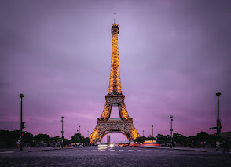
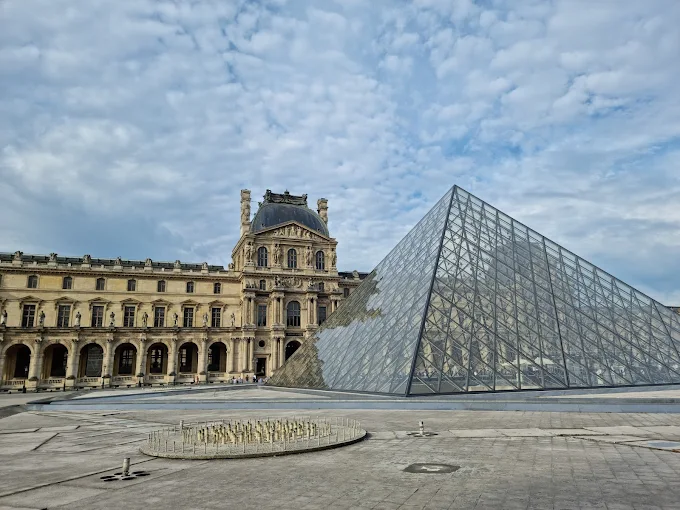
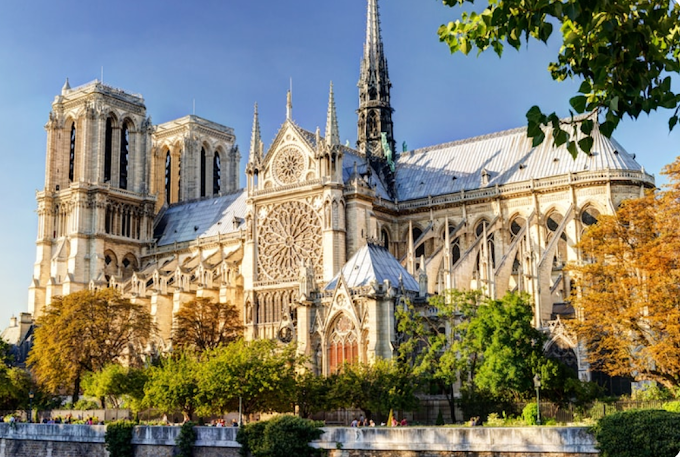

Descriçao do site:
Está em dúvida por onde começar a aproveitar suas férias na França?
Pois digo que você entrou na página certa! Aqui nós te ajudaremos a entender o porquê da popularidade deste país e te mostraremos os três melhores pontos turísticos.
Por que a França? 🇫🇷
A França é um destino popular para intercâmbios e estudos, devido à sua rica cultura, gastronomia, belezas naturais e qualidade de vida.
Cultura
- A França é um país rico culturalmente, com acesso a grandes museus e perto de locais onde estiveram grandes artistas
- A França é famosa pela sua gastronomia, cafés e restaurantes
- A França é o país mais visitado da Europa Ocidental
Moda
- A França possui algumas das marcas de moda mais clássicas do mundo, como Chanel, Yves Saint Laurent, Dior, Givenchy
Língua
- O francês é falado nos cinco continentes e é o idioma oficial de muitas organizações internacionais
Conheça a França
Terra de castelos medievais, das melhores vinícolas do mundo, da gastronomia, de museus icônicos e praias paradisíacas, a França faz parte dos principais roteiros turísticos pela Europa, e não é difícil entender o por quê.
Aqui vai as três melhores atrações:
- Torre Eiffel
- Museo de Louvre
- Catedral de Notre-Dame Paris
Torre Eiffel
A Torre Eiffel, símbolo de Paris e da França, é o monumento imperdível a visitar quando se está na Cidade da Luz. Com uma altura de 330 metros, a Torre Eiffel tem uma história fascinante que remonta ao final do século XIX. Seu arquiteto, o engenheiro Gustave Eiffel, já era renomado por suas realizações em pontes, viadutos e estruturas metálicas antes de construir esta emblemática estrutura de ferro. A Torre foi originalmente concebida como uma instalação temporária para a Exposição Universal de Paris em 1889, para celebrar o centenário da Revolução Francesa. A Torre Eiffel recebe o público todos os dias, das 9h30 às 23h45 (das 9h às 0h45 em julho e agosto). Para visitar os pisos da Torre Eiffel - há 3 níveis: 1.º piso, 2.º piso e cimo - os visitantes podem comprar bilhetes antecipadamente em nossa bilheteria online oficial, ou comprar bilhetes no local no dia da visita, nas bilheteiras localizadas no pátio sob a Torre Eiffel. Para aqueles que desejam apenas passear sob a Torre, no pátio e nos jardins, o acesso é gratuito e livre. Basta usar uma das duas entradas principais (controle de segurança) do monumento. A Torre Eiffel oferece bilhetes de visita, que vão até o cimo, ou até o 2.º piso. A visita sempre inclui os níveis inferiores. São também propostas exclusivamente na bilheteria online da Torre Eiffel ofertas de visitas guiadas, assim como ofertas que combinam visitas com taça de champanhe ou visitas com brunch.
Museo de Louvre
O Louvre é enorme e os amantes da arte podem passar vários dias passeando por ele. Para ter uma ideia geral e ver as obras mais destacadas, é necessário dedicar pelo menos uma manhã completa para percorrer o museu. Se você se interessa pela arte e quer conhecer a fundo as obras do Louvre, o museu coloca à disposição de seus visitantes um audioguia com comentários sobre cada obra dessa galeria. Você pode fazer o download em seu celular ou no Nintendo 3DS. Embora o Museu do Louvre seja muito importante a nível mundial, para as pessoas que não são muito interessadas em arte ele pode acabar se tornando um passeio cansativo devido às suas enormes dimensões, além do calor e das aglomerações.
Catedral de Notre-Dame Paris
Construída entre 1163 e 1245 na Île de la Cité, a Catedral de Notre Dame de Paris é uma das catedrais góticas mais antigas do mundo. O nome da catedral significa Nossa Senhora e é dedicada à Virgem Maria. Em seus oito séculos de história, a Catedral de Notre Dame foi reformada em várias ocasiões, sendo a mais importante em meados do século XIX. Ao longo desses anos foram substituídos os arcobotantes, foi incluída a rosácea sul, as capelas foram reformadas e foram incluídas estátuas. Em Notre Dame foram realizados importantes acontecimentos, entre os quais vale destacar a coroação de Napoleão Bonaparte, a beatificação de Joana D’Arc e a coroação de Henrique VI da Inglaterra. No dia 15 de abril de 2019, a catedral de Notre Dame sofreu um grave incêndio que provocou danos significativos no telhado e derrubou a agulha da torre principal.
Vantagens de conhecer a França
| 🇫🇷 Riqueza cultural e histórica | 🍷Gastronomia e vinhos de alto nível | 🌄 Paisagens variadas e deslumbrantes |
|---|---|---|
| A França é um verdadeiro museu a céu aberto. Desde os castelos do Vale do Loire até as ruínas romanas no sul, passando por cidades medievais como Carcassonne e a modernidade de Paris. | Queijos, vinhos, croissants, macarons, escargots... É um prato cheio (literalmente) para quem ama comer bem. | A região da Normandia com falésias dramáticas, a Provence com campos de lavanda, e o interior do país com vilarejos encantadores. |